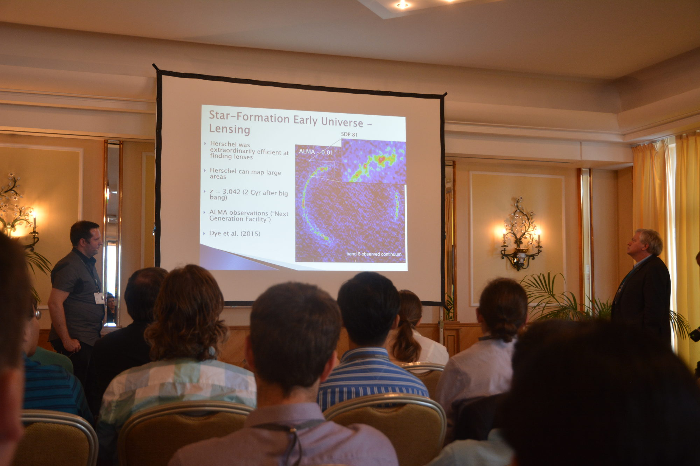

Teaching

Being questioned by Brian Schmidt (Nobel prize winner) during the masterclass at the Lindau Nobel Laurete Meeting.
Despite being a post-doctoral researcher I play an active role in teaching both undergraduates and postgraduate students.
I've just completed the lecturing for a new course that I've written (almost) from scratch, which is called
'Introduction to Astrophysics'. The course is for our first year physics students, and is designed to give them a flavour of all
aspects of astrophysics from individual stars to the study of the Universe as a whole (planets are covered by a course
in the first term).
The course is taken by most of the Cardiff first year contingent and so I have over 90 students in the class. This poses
some logistical challenges as I like to have some interactive elements in my lectures. Over the course I've tried to include many live
experiments to demonstrate physical principles, showed them current results and visualtions (like 3D videos), and tried to
get them responding and disscussing certain points (sometimes through the use of chunking).
One add on for PowerPoint called 'PollEverywhere' I can highly recommend as it allows you to ask questions in real time with
undergraduates responding on their phones. With a bit of thought some interesting problems can be created, like clicking where
on an orbit is the object moving fastest? or click on the supernova. For a first time run through the year course seemed to go
pretty well, and luckily the students in their feedback forms seem to agree. Of course hopefully after seeing how different
aspects went I'm going to try and make some improvements next year.
{kind=link}
One way I tried to make the course a bit more interesting was to make one item of coursework a pratical challenge to take a picture of the night sky. The idea was for them to get an image of some astronomoical objects and make some physical inference, but in the process develop some understanding about taking astronomical images (like effects of integration time). Students could take images in groups using anything incuding phones, digital cameras, and telescopes, and I also ran an observing trip where some fellow PhD students/postdocs tried to provide guidance. I also had a prize for the best artistic photo for which we had some brilliant entries; the 2018 winner is shown below.